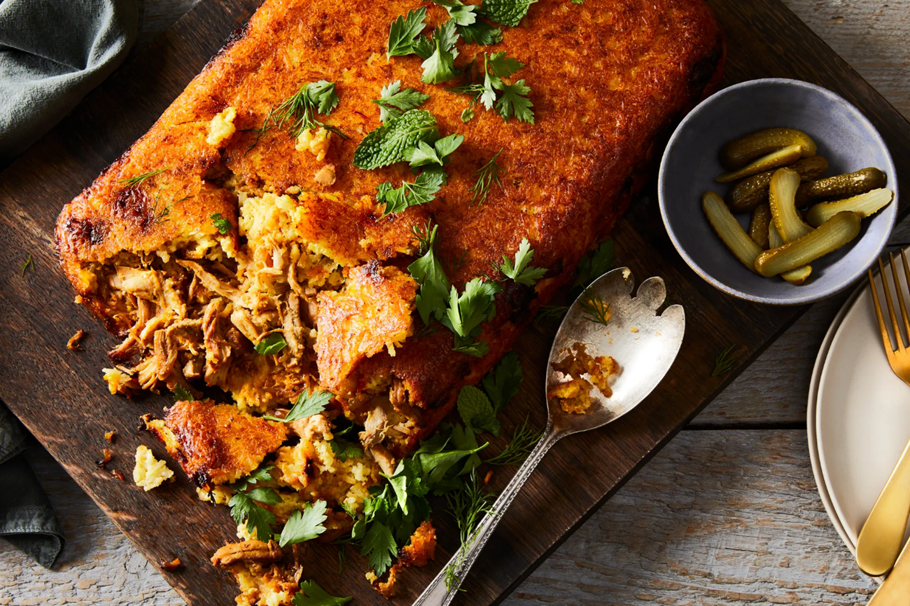
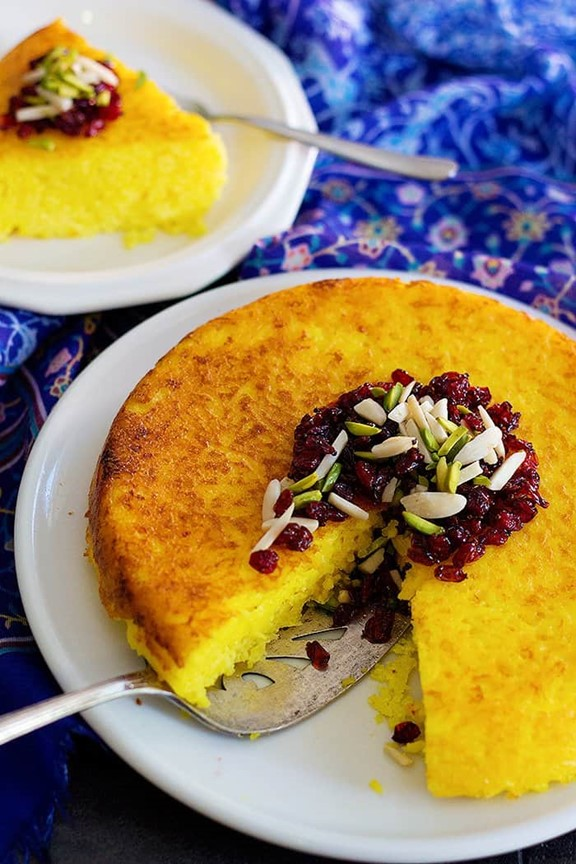

Tahchin
Category:Persian food
This recipe is adequate for 4 people.
Ingredients for cooking:
- 1/2 kg boneless, skinless chicken thighs
- 1 medium egg
- 1/2 cups plus 2 tablespoons 5-7% thick-style yogurt such as Greek
- 1/2 cup extra-virgin olive oil, plus more as needed for the rice
- 2 cups basmati rice, rinsed
- 1tablespoon plus 1 teaspoon ground cumin
- 1/4 teaspoon ground turmeric
- 1 tablespoon plus 2 teaspoon kosher salt, plus more for seasoning onions and chicken
- 4 tablespoons freshly squeezed lemon juice (from 2 lemons)


Cooking Directions:
- .Mix yogurt, cumin, turmeric, salt, lemon juice, and onion, then coat chicken and set aside.
- Cook onions in oil, add chicken and cook for 18 minutes. Cook rice and mix with yogurt mixture.
- Spread oil in a baking dish and add half of the rice-yogurt mixture, then layer chicken and onions, and top with remaining rice-yogurt mixture.
- Mix egg yolk, sugar, and yogurt in a pot and heat over low heat while stirring until creamy.
- Cover with foil, poke holes, and bake for 75-90 minutes.
- Remove from oven, add ghee or butter if desired, and invert onto a serving platter. Serve with pickles, remaining yogurt, and fresh herbs.
For more information, below links are sugessted: